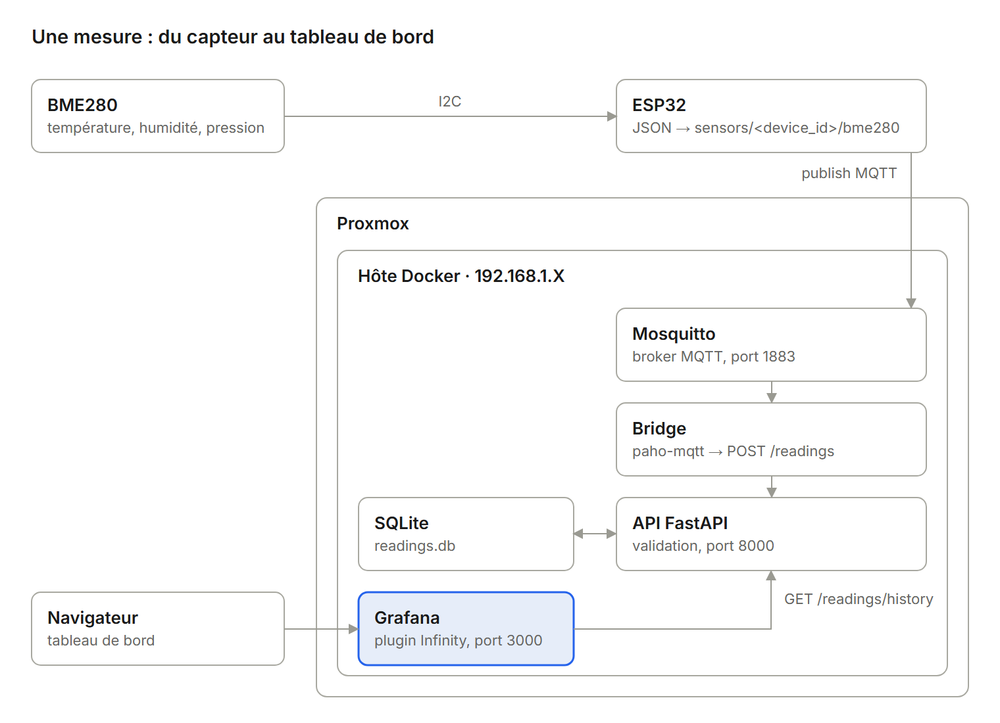
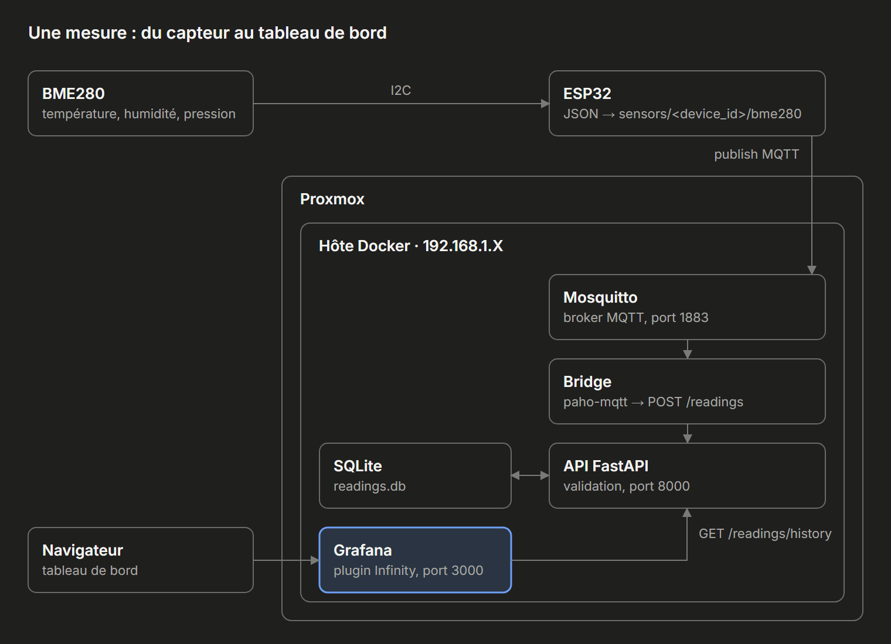
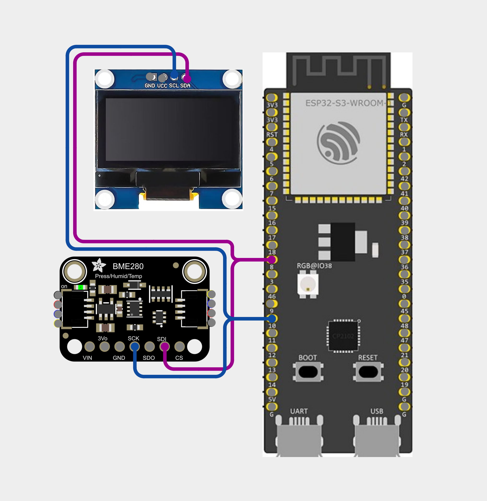
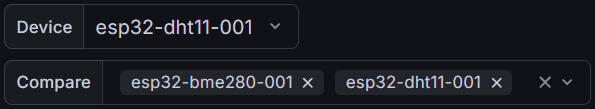
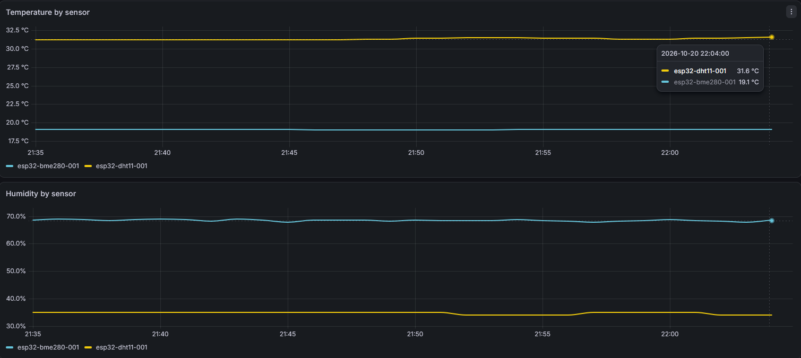

Capteur météo connecté
Un ESP32 lit la température, l’humidité et la pression d’une pièce avec un capteur BME280 et publie chaque mesure en MQTT. Sur mon homelab Proxmox, un bridge Python la transmet à une API FastAPI qui la stocke dans SQLite, et Grafana affiche le tout dans des graphiques.
- Matériel
- ESP32, capteur BME280 (I2C)
- Stack
- Python, FastAPI, SQLModel, SQLite
- Messagerie
- MQTT, Mosquitto, paho-mqtt
- Affichage et hébergement
- Grafana, Docker Compose, Proxmox
- Code source
- Dépôt GitHub
1. Vue d’ensemble
Principe
Afficher la température, l’humidité et la pression d’une pièce dans un tableau de bord, depuis n’importe quel appareil du réseau.


Chemin d’une mesure
- L’ESP32 lit le BME280 en I2C et publie un JSON sur le topic
sensors/<device_id>/bme280:{"ts": 1792320840, "temp": 17.6, "hum": 64.7, "pres": 1022.3} - Mosquitto reçoit le message sur le port 1883, après authentification par utilisateur et mot de passe.
- Le bridge, abonné à
sensors/+/bme280, lit l’identifiant de la carte dans le topic et poste la mesure surPOST /readings. - L’API vérifie chaque valeur et l’écrit dans SQLite.
- Grafana interroge l’API avec le plugin Infinity et affiche les grahpiques.
Une valeur hors des plages du BME280 est refusée par l’API (code 422), un capteur défaillant ne pollue pas l’historique.
Les briques
| Brique | Rôle |
|---|---|
| ESP32 + BME280 | Lit le capteur en I2C et
publie en MQTT. L’horodatage ts
est ajouté par la carte, en secondes Unix. |
| Mosquitto | Broker MQTT dans un conteneur Docker. Accès par mot de passe avec un compte pour les ESP32, un pour le bridge. |
| Bridge Python | Abonné aux topics avec paho-mqtt. Se reconnecte seul au broker et tente trois fois chaque envoi si l’API ne répond pas. |
| API FastAPI | Valide et stocke
les mesures, puis donne l’historique moyenné selon la
période demandée. Documentation Swagger sur
/docs. |
| SQLite | Un seul fichier sur un dossier monté, en mode WAL. Grafana lit pendant que le bridge écrit. |
| Grafana + Infinity | Lit l’API en JSON côté serveur. La source de données et le tableau de bord sont provisionnés par fichiers. |
2. Mise en place
2.1 ESP32 et BME280
L'ESP32 lit les mesures du capteur BME280 en I2C et publie un JSON avec les mesures. Chaque carte a un identifiant unique, utilisé à la fois comme client ID MQTT et dans le topic :
#define DEVICE_ID "esp32-bme280-001"
#define MQTT_TOPIC "sensors/" DEVICE_ID "/bme280"
client.connect(DEVICE_ID, MQTT_USER, MQTT_PASS);
client.publish(MQTT_TOPIC, payload);- Mosquitto n’accepte qu’une connexion par client ID : deux cartes avec le même identifiant se déconnectent l’une l’autre.
- L’horloge de la carte doit être synchronisée (NTP), puisque
tsvient d’elle.


2.2 Compose et Mosquitto
Les quatre services tournent dans un même
docker-compose.yaml sur l’hôte Docker. Les
identifiants viennent d’un fichier .env placé à
côté, jamais commité. Version simplifiée :
services:
mosquitto:
image: eclipse-mosquitto:2
container_name: mosquitto
restart: unless-stopped
ports:
- "1883:1883"
volumes:
- ./config:/mosquitto/config
- ./data:/mosquitto/data
api:
build: ./api
container_name: api
restart: unless-stopped
ports:
- "8000:8000"
environment:
DB_PATH: /data/readings.db
volumes:
- ./api-data:/data
healthcheck:
test: ["CMD", "python", "-c", "import urllib.request; urllib.request.urlopen('http://localhost:8000/health')"]
interval: 10s
retries: 5
bridge:
build: ./bridge
restart: unless-stopped
environment:
MQTT_HOST: mosquitto
MQTT_USER: ${MQTT_USER}
MQTT_PASS: ${MQTT_PASS}
MQTT_TOPIC: sensors/+/bme280
API_URL: http://api:8000/readings
depends_on:
mosquitto:
condition: service_started
api:
condition: service_healthy
grafana:
image: grafana/grafana:latest
container_name: grafana
restart: unless-stopped
ports:
- "3000:3000"
environment:
GF_PLUGINS_PREINSTALL: yesoreyeram-infinity-datasource
GF_USERS_DEFAULT_THEME: system
GF_SECURITY_ADMIN_PASSWORD: ${GRAFANA_ADMIN_PASSWORD}
volumes:
- ./grafana/provisioning:/etc/grafana/provisioning
- ./grafana-data:/var/lib/grafana
depends_on:
api:
condition: service_healthyMosquitto refuse les connexions anonymes.
config/mosquitto.conf :
listener 1883
allow_anonymous false
password_file /mosquitto/config/passwd
persistence true
persistence_location /mosquitto/data/Les deux comptes se créent avec l’outil de l’image, depuis
~/mosquitto :
docker run --rm -v "$PWD/config:/mosquitto/config" eclipse-mosquitto:2 \
mosquitto_passwd -b -c /mosquitto/config/passwd esp32 <MOT_DE_PASSE_1>
docker run --rm -v "$PWD/config:/mosquitto/config" eclipse-mosquitto:2 \
mosquitto_passwd -b /mosquitto/config/passwd bridge <MOT_DE_PASSE_2>-c recrée le fichier : seulement pour
le premier compte. Le fichier passwd doit
appartenir à l’utilisateur 1883, celui qui fait tourner
Mosquitto dans le conteneur.
2.3 Bridge MQTT vers API
Le bridge est un petit service Python, avec paho-mqtt et requests. Il lit sa configuration dans les variables d’environnement du compose. Son cœur, simplifié :
def on_connect(client, userdata, flags, reason_code, properties):
# S'abonner ici rétablit l'abonnement après chaque reconnexion
client.subscribe(MQTT_TOPIC, qos=1)
def on_message(client, userdata, msg):
device_id = msg.topic.split("/")[1]
data = json.loads(msg.payload)
post_reading({
"device_id": device_id,
"ts": int(data["ts"]),
"temp": float(data["temp"]),
"hum": float(data["hum"]),
"pres": float(data["pres"]),
})- Un message mal formé ou incomplet est signalé dans les logs du bridge, puis ignoré.
- Si l’API répond par une erreur 4xx, la mesure est rejetée sans nouvel essai. Sans réponse ou en 5xx, trois tentatives à 2 s d’intervalle.
- Le bridge attend Mosquitto au démarrage
(
retry_first_connection=True) : l’ordre de lancement des conteneurs n’a pas d’importance.
2.4 API et SQLite
L’API FastAPI tient dans un fichier. SQLModel crée la table au premier démarrage, et Pydantic valide chaque mesure aux limites du BME280 : de −40 à 85 °C, de 0 à 100 % d’humidité et de 300 à 1100 hPa.
| Méthode | Route | Rôle |
|---|---|---|
| POST | /readings | Enregistre une mesure (utilisée par le bridge) |
| GET | /readings | Mesures brutes sur une période, filtrables par appareil |
| GET | /readings/latest | Dernière mesure de chaque appareil |
| GET | /readings/history | Moyennes par intervalle, pour un ou plusieurs appareils |
| GET | /devices | Liste des appareils connus |
| GET | /health | Répond au healthcheck Docker |
Le fichier SQLite est en mode WAL : Grafana lit pendant que le bridge écrit, sans blocage.
2.5 Précision selon la période
Renvoyer toutes les mesures brutes ne tient pas sur de longues périodes. Avec une mesure toutes les quelques secondes, quelques mois d’historique représentent déjà des centaines de milliers de lignes. L’API devrait toutes les convertir en JSON, les envoyer à Grafana, qui les afficherait sur un graphique de quelques centaines de pixels de large.
/readings/history calcule donc des moyennes par
intervalle dans SQLite, avec une précision qui suit la durée
demandée :
| Période demandée | Intervalle | Points au maximum |
|---|---|---|
| Jusqu’à 2 jours | 1 minute | 2880 |
| Jusqu’à 14 jours | 30 minutes | 672 |
| Jusqu’à 90 jours | 3 heures | 720 |
| Au-delà | 1 jour | un par jour |
# (durée maximale en secondes, intervalle en secondes)
BUCKET_TIERS = [
(2 * 86400, 60), # jusqu'à 2 jours : 1 minute
(14 * 86400, 1800), # jusqu'à 14 jours : 30 minutes
(90 * 86400, 10800), # jusqu'à 90 jours : 3 heures
]
BUCKET_DEFAULT = 86400 # au-delà : 1 jour
def auto_bucket(range_seconds: int) -> int:
for longest, bucket in BUCKET_TIERS:
if range_seconds <= longest:
return bucket
return BUCKET_DEFAULTUn paramètre bucket explicite reste prioritaire.
Les statistiques du tableau de bord demandent toujours les
dernières 24 h à la minute, quelle que soit la période
affichée.
Le même endpoint accepte plusieurs appareils à la fois (paramètre
devices, liste séparée par des virgules) et renvoie
l’identifiant de l’appareil sur chaque ligne. C’est ce
qu’utilisent les graphiques de comparaison.
2.6 Grafana
Grafana lit l’API avec le plugin Infinity, installé au démarrage
par GF_PLUGINS_PREINSTALL. La source de données et
le tableau de bord sont provisionnés par fichiers : ils
apparaissent au premier lancement, sans clic.
apiVersion: 1
datasources:
- name: Readings API
uid: readings-api
type: yesoreyeram-infinity-datasource
access: proxy
isDefault: true
jsonData:
allowedHosts:
- http://api:8000allowedHosts limite Infinity à l’API. Les requêtes
partent du serveur Grafana, sur le réseau interne de Docker.
Le tableau de bord contient :
- trois statistiques avec leur courbe des dernières 24 h : température, humidité et pression
- la température et l’humidité sur deux axes, qui suivent le sélecteur de période
- la pression sur 7 jours
- un tableau du minimum, du maximum et de la valeur actuelle sur 24 h
- deux graphiques de comparaison, température et humidité, avec une courbe par capteur choisi dans un menu à sélection multiple.
Dans les graphiques de comparaison, une transformation Grafana (Partition by values) découpe la réponse de l’API en une courbe par appareil, et chaque capteur garde la même couleur d’un graphique à l’autre. Un clic sur la légende masque ou isole une courbe.
3. Résultat
Tableau de bord
Une deuxième carte, un ESP32 DevKit v1 avec un capteur DHT11, a rejoint la première. Elle publie sur le même topic et au même format JSON. Le broker, le bridge et l’API n’ont pas changé, et la carte apparaît d’elle-même dans les menus de Grafana. Les graphiques de comparaison affichent les deux capteurs côte à côte.


Vérifier la chaîne
Tout fonctionne quand :
docker compose psmontre les quatre services démarrés, l’API en healthy.mosquitto_sub -u bridge -P <MOT_DE_PASSE_2> -t 'sensors/#' -vaffiche les messages de l’ESP32./readings/latestsur le port 8000 de l’hôte renvoie la dernière mesure.- le tableau de bord Grafana affiche l’appareil et ses courbes.